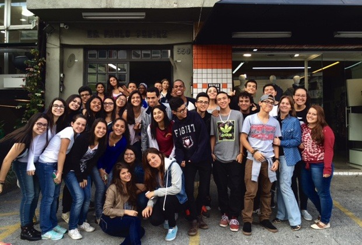
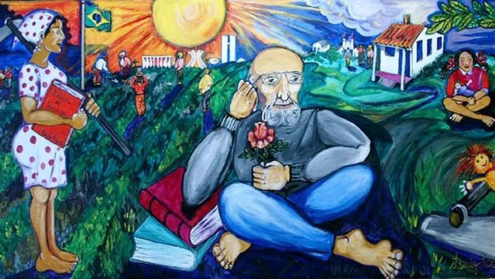
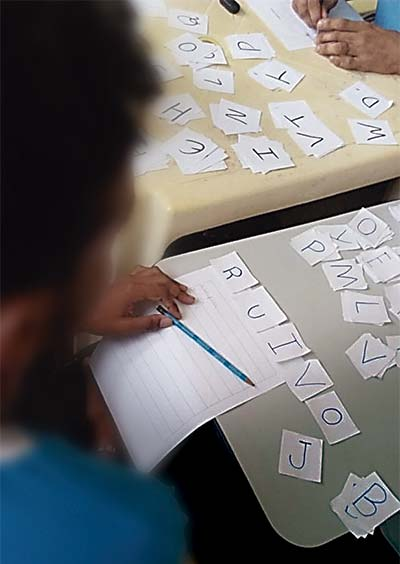

JORNAL DO ALUNO
SEMANA PAULO FREIRE - ETEC
Durante o mês de maio, será celebrada nas ETECs de São Paulo a Semana Paulo Freire.
Em 26 de novembro de 1998, a Lei n° 10.098 instituiu a "Semana Paulo Freire da Educação", no Estado de São Paulo. A cada ano, cresce o número de Escolas Técnicas Estaduais (Etecs) que incorporam em seu calendário a data.
A proposta da iniciativa é oferecer uma série de atividades pedagógicas, artísticas e sociais, desenvolvidas por alunos e professores, para homenagear o educador pernambucano, patrono da Educação Brasileira.
Paulo Freire é considerado o mentor da educação para a consciência. O mais célebre educador brasileiro, autor da pedagogia do oprimido, defendia como objetivo da escola ensinar o aluno a “ler o mundo” para poder transformá-lo.
Ao longo desta semana os alunos dos cursos Técnicos Integrado ao Ensino Médio das unidades rural e urbana, através de todos os professores, trabalharam textos com pensamentos e frases do ilustre educador. Com isso inúmera foram as indagações, sempre levando todos a reflexão sobre a educação e sobre o ensinar.
Paulo Freire, 100 anos: como o legado do educador brasileiro é visto no exterior
Rejeitado pela atual administração, Paulo Freire está entre os autores mais citados em trabalhos acadêmicos do mundo
Ver reportagens
100 anos depois: Paulo Freire hoje
Na comemoração do centenário do patrono da educação brasileira, professorese pesquisadores defendem e praticam a atualidade da pedagogia freireana
